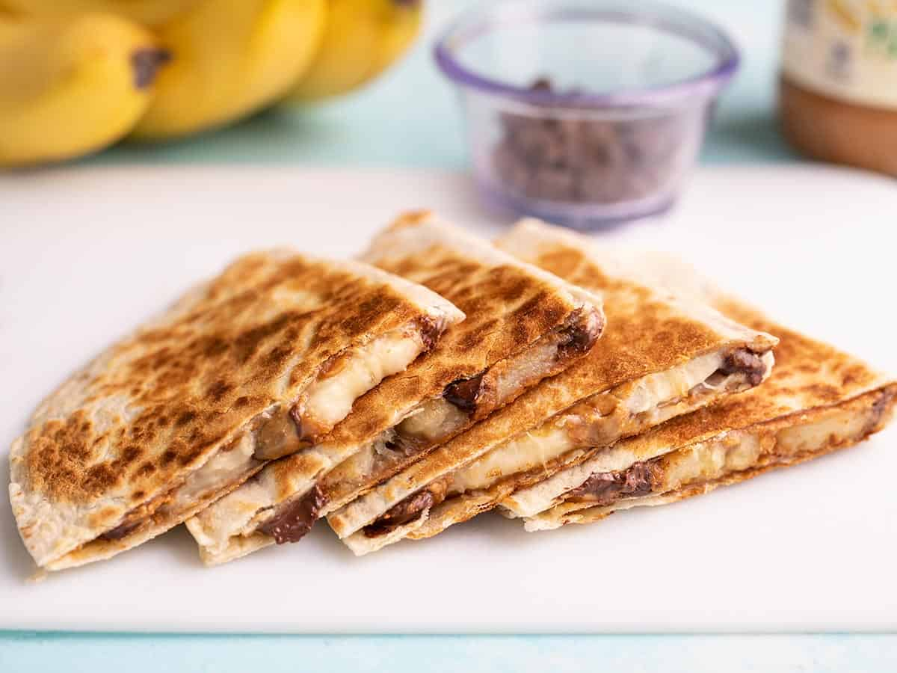

Peanut Butter Banana Quesadillas

Description
A quick and easy dessert with none of the guilt! Credit goes to BudgetBytes.
You don't need to limit yourself to just peanut butter and bananas! Go ahead and mix in
other stuff like chocolate, shredded coconut, diced strawberries...the sky's the limit!
Ingredients
- 1 8" flour tortilla
- 2 T. peanut butter
- 1/2 medium banana, sliced
- 1 T. chocolate chips
Directions
- Slather the peanut butter on the tortilla.
- Thinly slice the banana, then scatter over one half of the tortilla
followed by the chocolate chips. Fold the tortilla.
- Cook in a skillet over medium-low heat until golden brown and crispy
on both sides and you just cannot resist eating it straight out of the
pan!